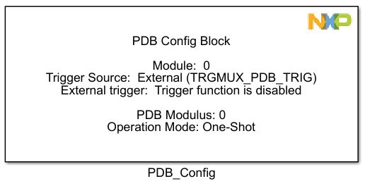
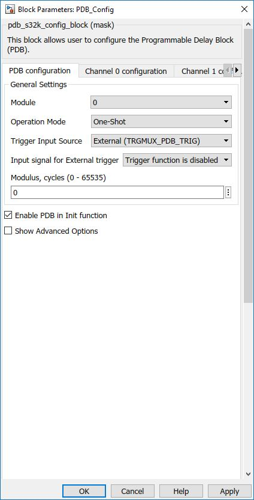
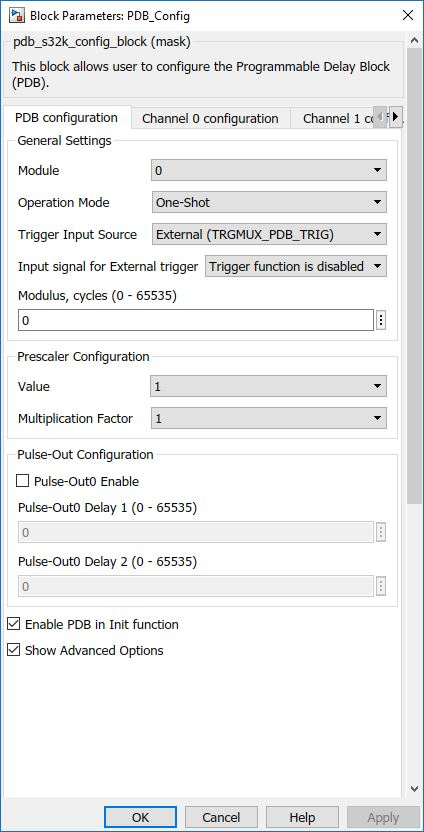
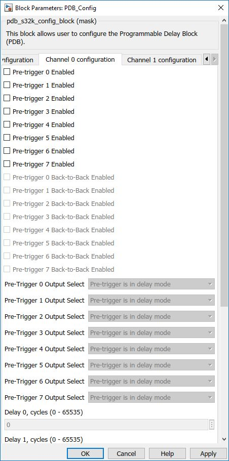
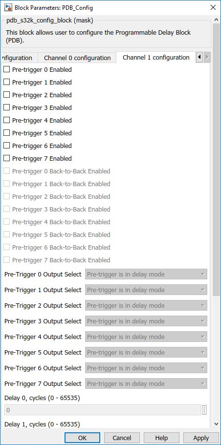

Programmable Delay Block
This block is used to setup the programmable delay module (PDB). The PDB provides controllable delays from an external trigger, or a programmable interval tick, to the hardware trigger inputs of ADCs. The PDB can optionally provide pulse outputs (Pulse-Out's) that are used as the sample window in the CMP block.
Block Image
Inputs:
- None
Outputs:
- None
Parameters and Dialog Box
The block dialog consists of the following tabs:
PDB Configuration
The PDB Configuration tab contains the following parameters:
PDB Module
Selects which PDB module to use.
Operation Mode
- One-Shot
- Continuous
In One-Shot mode the counter is enabled and restarted at count zero upon receiving a positive edge on the selected trigger input source or software trigger.
In Continuous mode the counter is enabled and restarted at count zero. The counter is rolled over to zero again when the count reaches the value specified in the modulus register, and the counting is restarted. This enables a continuous stream of pretriggers/trigger outputs as a result of a single trigger input event.
Trigger Input Source (TRGSEL)
Selects the trigger input source for the PDB. PDB trigger source selection is implemented through the TRGMUX module. For each PDB unit, there is only one trigger input from TRGMUX, but it supports different trigger sources
- External (TRGMUX_PDB_TRIG)
- Software
Input signal for External trigger (TRGMUX_PDB_TRIG Only)
Available external trigger input pins.
PDB Modulus (MOD)
Specifies the period of the counter. When the counter reaches this value, it will be reset back to zero. If the PDB is in Continuous mode, the count begins anew.
Enable PDB in Init function
Enable this checkbox if you want the PDB to be enabled in the initialization function called once, at the beginning. If you want to enable it at a certain moment, use PDB Enable block.
Show Advanced Options
Prescaler Value (PRESCALER)
Counting uses the peripheral clock divided by x times multiplication factor selected by MULT.
Multiplication Factor for Prescaler Value (MULT)
Selects the multiplication factor of the prescaler divider for the counter clock.
Pulse-Outx Enable
Enables Pulse out.
Pulse-Outx Delay 1 (0-65535)
Specifies the delay 1 value for the PDB Pulse-Out. Pulse-Out goes high when the PDB counter is equal to the DLY1.
Pulse-Outx Delay 2 (0-65535)
Specifies the delay 2 value for the PDB Pulse-Out. Pulse-Out goes low when the PDB counter is equal to the DLY2.
Channel 0 Configuration
The Channel 0 Configuration tab contains the following parameters:
Pre-Trigger x Enabled
Enables the PDB ADC pre-trigger.
Pre-Trigger x Back-To-Back Enabled
Back-to-back operation enables the ADC conversions complete to trigger the next PDB channel pre-trigger and trigger output, so that the ADC conversions can be triggered on next set of configuration and results registers. Application code must only enable the back-to-back operation of the PDB pre-triggers at the leading of the back-to-back connection chain.
Pre-Trigger x Output Select (TOS)
Selects the PDB ADC pre-trigger mode:
- Pre-triggers bypassed mode
- Pre-triggers delay mode
Delay x (DLY)
Specifies the delay value for the channel's corresponding pre-trigger. The pre-trigger asserts when the counter is equal to DLY.
Channel 1 Configuration
The Channel 1 Configuration tab contains the following parameters:
Pre-Trigger x Enabled
Enables the PDB ADC pre-trigger.
Pre-Trigger x Back-To-Back Enabled
Back-to-back operation enables the ADC conversions complete to trigger the next PDB channel pre-trigger and trigger output, so that the ADC conversions can be triggered on next set of configuration and results registers. Application code must only enable the back-to-back operation of the PDB pre-triggers at the leading of the back-to-back connection chain.
Pre-Trigger x Output Select (TOS)
Selects the PDB ADC pre-trigger mode.
- Pre-triggers bypassed mode
- Pre-triggers delay mode
Delay x (DLY)
Specifies the delay value for the channel's corresponding pre-trigger. The pre-trigger asserts when the counter is equal to DLY.
Block Dependency
- None
Block Miscellaneous Details:
- None